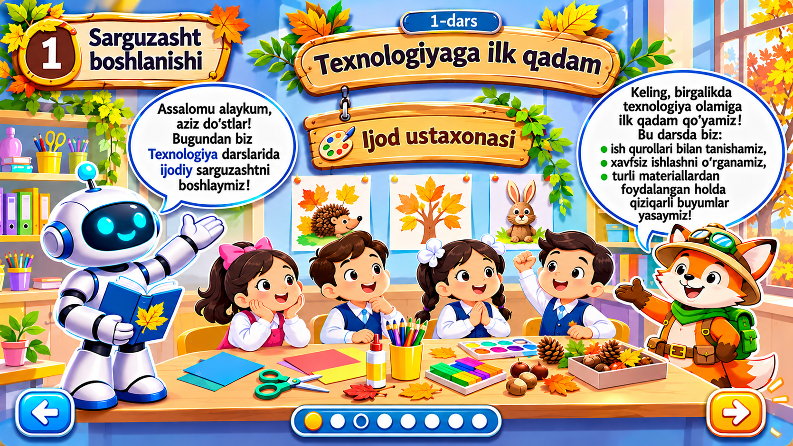

Avval sinfni, keyin o‘rganmoqchi bo‘lgan fanni tanlang.
Davom etish uchun xaritadagi chorak nomini bosing.

Ikki holatni solishtiring. Qaysi biri xavfsiz?
Buyum kartochkasini bosing yoki pastda o‘zingiz tanigan buyumlarni belgilang.
Ish o‘rnini tayyorlash qoidalarini bosib, bajarganlaringizni belgilang.
Har bir qoidani o‘qing va bosib belgilang.